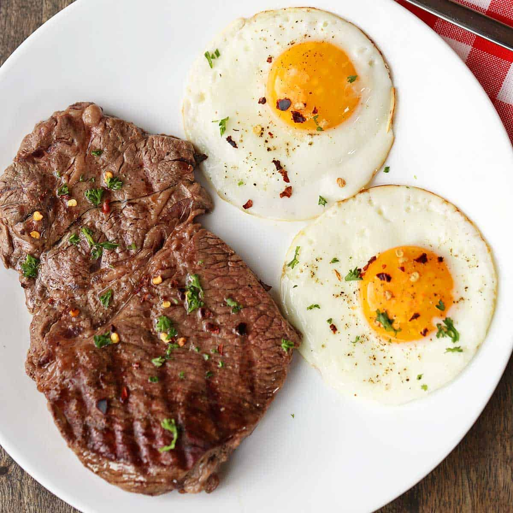

Steak and Eggs

Pan Seared Steak and Eggs
Steak and eggs is good for breakfast, lunch, and dinner especially if you're on the steak and egg diet. Pick two meals a day to eat and enjoy your steak and eggs.The menu may be boring, but it's simple and effective. Lots of protein and fat with zero carbs.
Ingredients
- 3/4 to a 1 1/2 pound steak (fatty steaks are better)
- 4-6 large eggs
- butter or tallow for frying
- salt
Equipment needed
Heavy skillet or frying pan
- Meat thermometer
Steps
- Preheat your pan until it is hot.
- Add a tablespoon or two of butter or tallow.
- Cook Steak on one side before flipping in to finish on the other side. Use the meat thermometer if you need it to determine how done you want it.
- Take the steak off the pan to let it rest and add more butter to the pan.
- Add the eggs to the pan and cook them until they are the desired doneness.